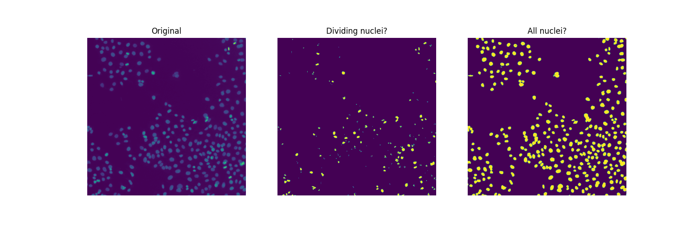

Source
SourceNote
Click here to download the full example code or to run this example in your browser via Binder
Segment human cells (in mitosis)¶
In this example, we analyze a microscopy image of human cells. We use data provided by Jason Moffat 1 through CellProfiler.
- 1
Moffat J, Grueneberg DA, Yang X, Kim SY, Kloepfer AM, Hinkle G, Piqani B, Eisenhaure TM, Luo B, Grenier JK, Carpenter AE, Foo SY, Stewart SA, Stockwell BR, Hacohen N, Hahn WC, Lander ES, Sabatini DM, Root DE (2006) “A lentiviral RNAi library for human and mouse genes applied to an arrayed viral high-content screen” Cell, 124(6):1283-98. PMID: 16564017 DOI:10.1016/j.cell.2006.01.040
import matplotlib.pyplot as plt
import numpy as np
from scipy import ndimage as ndi
from skimage import (
color, feature, filters, measure, morphology, segmentation, util
)
from skimage.data import human_mitosis
image = human_mitosis()
fig, ax = plt.subplots()
ax.imshow(image, cmap='gray')
ax.set_title('Microscopy image of human cells stained for nuclear DNA')
plt.show()
We can see many cell nuclei on a dark background. Most of them are smooth and have an elliptical shape. However, we can distinguish some brighter spots corresponding to nuclei undergoing mitosis (cell division).
Another way of visualizing a greyscale image is contour plotting:
fig, ax = plt.subplots(figsize=(5, 5))
qcs = ax.contour(image, origin='image')
ax.set_title('Contour plot of the same raw image')
plt.show()
The contour lines are drawn at these levels:
Out:
array([ 0., 40., 80., 120., 160., 200., 240., 280.])
Each level has, respectively, the following number of segments:
[len(seg) for seg in qcs.allsegs]
Out:
[0, 320, 270, 48, 19, 3, 1, 0]
Estimate the mitotic index¶
Cell biology uses the mitotic index to quantify cell division and, hence, cell proliferation. By definition, it is the ratio of cells in mitosis over the total number of cells. To analyze the above image, we are thus interested in two thresholds: one separating the nuclei from the background, the other separating the dividing nuclei (brighter spots) from the non-dividing nuclei. To separate these three different classes of pixels, we resort to Multi-Otsu Thresholding.
thresholds = filters.threshold_multiotsu(image, classes=3)
regions = np.digitize(image, bins=thresholds)
fig, ax = plt.subplots(ncols=2, figsize=(10, 5))
ax[0].imshow(image)
ax[0].set_title('Original')
ax[0].axis('off')
ax[1].imshow(regions)
ax[1].set_title('Multi-Otsu thresholding')
ax[1].axis('off')
plt.show()
Since there are overlapping nuclei, thresholding is not enough to segment all the nuclei. If it were, we could readily compute a mitotic index for this sample:
cells = image > thresholds[0]
dividing = image > thresholds[1]
labeled_cells = measure.label(cells)
labeled_dividing = measure.label(dividing)
naive_mi = labeled_dividing.max() / labeled_cells.max()
print(naive_mi)
Out:
0.7847222222222222
Whoa, this can’t be! The number of dividing nuclei
print(labeled_dividing.max())
Out:
226
is overestimated, while the total number of cells
print(labeled_cells.max())
Out:
288
is underestimated.
Count dividing nuclei¶
Clearly, not all connected regions in the middle plot are dividing nuclei.
On one hand, the second threshold (value of thresholds[1]) appears to be
too low to separate those very bright areas corresponding to dividing nuclei
from relatively bright pixels otherwise present in many nuclei. On the other
hand, we want a smoother image, removing small spurious objects and,
possibly, merging clusters of neighbouring objects (some could correspond to
two nuclei emerging from one cell division). In a way, the segmentation
challenge we are facing with dividing nuclei is the opposite of that with
(touching) cells.
To find suitable values for thresholds and filtering parameters, we proceed by dichotomy, visually and manually.
higher_threshold = 125
dividing = image > higher_threshold
smoother_dividing = filters.rank.mean(util.img_as_ubyte(dividing),
morphology.disk(4))
binary_smoother_dividing = smoother_dividing > 20
fig, ax = plt.subplots(figsize=(5, 5))
ax.imshow(binary_smoother_dividing)
ax.set_title('Dividing nuclei')
ax.axis('off')
plt.show()
We are left with
cleaned_dividing = measure.label(binary_smoother_dividing)
print(cleaned_dividing.max())
Out:
29
dividing nuclei in this sample.
Segment nuclei¶
To separate overlapping nuclei, we resort to Watershed segmentation. To visualize the segmentation conveniently, we colour-code the labelled regions using the color.label2rgb function, specifying the background label with argument bg_label=0.
distance = ndi.distance_transform_edt(cells)
local_max_coords = feature.peak_local_max(distance, min_distance=7)
local_max_mask = np.zeros(distance.shape, dtype=bool)
local_max_mask[tuple(local_max_coords.T)] = True
markers = measure.label(local_max_mask)
segmented_cells = segmentation.watershed(-distance, markers, mask=cells)
fig, ax = plt.subplots(ncols=2, figsize=(10, 5))
ax[0].imshow(cells, cmap='gray')
ax[0].set_title('Overlapping nuclei')
ax[0].axis('off')
ax[1].imshow(color.label2rgb(segmented_cells, bg_label=0))
ax[1].set_title('Segmented nuclei')
ax[1].axis('off')
plt.show()
Additionally, we may use function color.label2rgb to overlay the original image with the segmentation result, using transparency (alpha parameter).
color_labels = color.label2rgb(segmented_cells, image, alpha=0.4, bg_label=0)
fig, ax = plt.subplots(figsize=(5, 5))
ax.imshow(color_labels)
ax.set_title('Segmentation result over raw image')
plt.show()
Finally, we find a total number of
print(segmented_cells.max())
Out:
286
cells in this sample. Therefore, we estimate the mitotic index to be:
print(cleaned_dividing.max() / segmented_cells.max())
Out:
0.10139860139860139
Total running time of the script: ( 0 minutes 1.161 seconds)